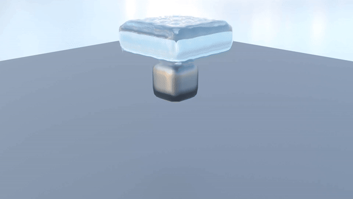
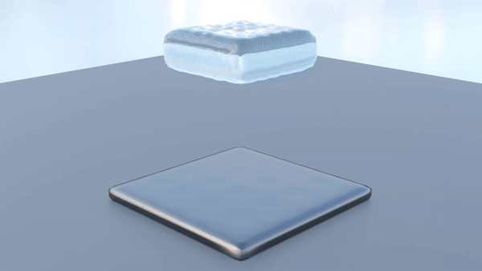

Slides | Code | Final Presentation
In this project, we implemented a particle-based fluid simulator with freezing effects, and rendered our simulation in Blender. We based our fluid dynamics off the Position Based Fluids paper, modeling the interactions between individual liquid particles. Then, we give our fluid supercool properties, such that it freezes instantly when in contact with a cold surface. In order to render the results, we exported our simulation as a point cloud, turned it into a mesh, and added realistic lighting effects in Blender.
This project relied heavily on having realistic and physically accurate fluid simulation. For this part of the project, we primarily based our work off the Position Based Fluids paper from Macklin and Muller. Then, we referenced the Visual Stimulation of Rapidly Freezing Water based on Crystallization paper for freezing.
We were initially inspired by FLIPing Fluids, a Sp23 team, to use the Fluid Implicit Particle (FLIP) solver due to its high algorithmic efficiency. However, this method did not model individual particles, it modeled an aggregate of particles within each voxel. Since our end goal was to model water freezing, we pivoted to using Position Based Fluids to model individual water particles. As far as we know, we are the first team to implement freezing water in this class. We also couldn’t find any public repositories on this, which made implementing it novel and challenging.
In order to implement our main fluid simulation, we followed the algorithms outlined in the Position Based Fluids paper. For this part of the project, we modeled each particle of water in a Particle class that stored information on the position, velocity, and any important variables about each particle that needs to be tracked. After initializing our scene, which involved setting up the boundaries of our simulation and setting the initial values for our particles, we followed the simulation loop outlined in the paper. This involved enforcing a set of constraints and applying forces that mimic fluid behavior.
The first step of the loop involved applying our external forces. For this project, our only external force acting on our water particles is gravity. To actually continue with our solver step, we had to find the neighbors for each particle. In order to do this, we used a similar technique to what we did for our cloth sim project. We built out a spatial map where each key was a boundary within the bounding boxes that we defined and the values were the particles that were in the bounding box. So if we wanted to get the neighbors of a particle, we would hash its position and query the mapping.
For the solver loop, the first constraint that we needed to enforce was incompressibility. Conceptually, this means that the density of particles within a flow of particles is constant throughout time. Since we can only simulate a finite number of particles, the solution to this is only an approximation. According to the paper, the SPH density estimator for particle \(i\) and neighbors particles \(j\) is defined as:
\[ \rho_i = \sum_{j} m_j W(\mathbf{p}_i - \mathbf{p}_j, h) \]where \(m_j\) is the mass of each water particles and \(W\) is defined as the \(\text{Poly6}\) kernel:
\[ W_{\text{poly}}(\vec{r}, h) = \frac{315}{64\pi h^9} \begin{cases} (h^2 - \|r\|^2)^3 & \text{if } 0 \leq \|\vec{r}\| \leq h \\ 0 & \text{if } \|\vec{r}\| > h \end{cases} \]This is used along with the rest density \(\rho_0\) to calculate the incompressibility constraint \(C_i\):
\[C_i(\mathbf{p}_1, ..., \mathbf{p}_n) = \frac{\rho_i}{\rho_0} - 1 \]In order to calculate the variables we need to find the position updates that allow us to enforce incompressibility, we also need to calculate the gradient of \(C_i\) for all particles \(i\). According to the paper, this is given by:
\[\nabla_{p_k} C_i = \frac{1}{\rho_0} \sum_{j} \nabla_{\mathbf{p}_k} W(\mathbf{p}_i - \mathbf{p}_j, h) \]Here, instead of the \(\text{Poly6}\) kernel function, we use the gradient of the Spiky kernel as defined by:
\[\nabla W_{\text{spiky}} = -\frac{45}{\pi h^6} \frac{\vec{r}}{\|\vec{r}\|} (h - \|\vec{r}\|)^2 \]This combined with the above equations is used to calculate \(\lambda\) values for each particle \(i\):
\[\lambda_i = -\frac{C_i(\mathbf{p}_1, ..., \mathbf{p}_n)}{\sum_{k} |\nabla_{\mathbf{p}_k} C_i|^2} \]One issue with this is the value is unstable if the denominator is zero or close to zero, so we also add a relaxation constant \(\epsilon\) to adjust for this:
\[\lambda_i = -\frac{C_i(\mathbf{p}_1, ..., \mathbf{p}_n)}{\sum_{k} |\nabla_{\mathbf{p}_k} C_i|^2 + \epsilon} \]After calculating this value for all of the particles, we can calculate the positional update for each particle as the following with neighbors \(j\):
\[\Delta \mathbf{p}_i = \frac{1}{\rho_0} \sum_{j} (\lambda_i + \lambda_j) \nabla W(\mathbf{p}_i - \mathbf{p}_j, h) \]This update is then applied to the position attribute for each of the particles to adjust for our incompressibility constraint. This alone, however, causes particles to clump when there are no neighbors around them. As a result, we also want to add an artificial pressure term when we calculate the positional update:
\[\Delta \mathbf{p}_i = \frac{1}{\rho_0} \sum_{j} (\lambda_i + \lambda_j + s_{\text{corr}}) \nabla W(\mathbf{p}_i - \mathbf{p}_j, h), \quad \quad s_{\text{corr}} = -k\left(\frac{W(\mathbf{p}_i - \mathbf{p}_j, h)}{W(\Delta \mathbf{q}, h)} \right)^n \]We also want to apply a vorticity force to make the water simulation more realistic, applying a force to allow for fluid rotation. First, we calculate an estimator \(\omega_i\) as follows:
\[ \omega_i = \nabla \times \mathbf{v} = \sum_{j} \mathbf{v}_{ij} \times \nabla_{\mathbf{p}_j} W(\mathbf{p}_i - \mathbf{p}_j, h), \quad \quad \mathbf{v}_{ij} = \mathbf{v}_j - \mathbf{v}_i \]Using this, the force applied to particle \(i\) is as follows:
\[\mathbf{f}^{\text{vorticity}}_{i} = \epsilon(\mathbf{N} \times \omega_i), \quad \quad \mathbf{N} = \frac{\eta}{|\eta|}, \quad \quad \eta = \nabla |\omega|_i \]Where the gradient of the magnitude of \(\omega_i\) is approximated as the following (according to a past project from this class)
We also wanted to add viscosity as another property of our fluid simulation. This is to simulate the resistance to flow that liquids have. For this part of the simulation loop, we only need t update the velocity as follows:
\[\mathbf{v}^{\text{new}}_{i} = \mathbf{v}_i + c \sum_{i} \mathbf{v}_{ij} \cdot W(\mathbf{p}_i - \mathbf{p}_j, h)\]The first thing we had to implement was to model solid particles in our simulation, which are supposed to remain stationary throughout the rendering. This also altered how particles collided as collisions between solid and liquid particles behaved differently than just between liquid particles.
Following the paper, we then implemented water films for solid particles, which was virtual mass that it receives from neighboring liquid particles. The larger the water film is, the more likely adjacent liquid particles would turn into ice. Next, we computed the growth direction vector for each solid particle, which was the direction ice would grow in if it were to form there. Without this, ice would grow uniformly in all directions and sharp icicles wouldn’t form. We then compute the freezing factor between each solid and liquid particle which essentially takes the dot product between the solid particle’s growth direction vector and the liquid particle’s velocity. So, if the growth direction vector and the liquid particle’s velocity are aligned, there is a higher chance the liquid will crystallize. Lastly, for each solid particle, we iterate through all its neighboring particles, and calculate whether it will turn into ice using the solid particle’s virtual film, the freezing factor of the liquid particle, and the distance between the two particles.
We started off by trying to use open source implementations of surface reconstruction, then trying to reimplement marching cubes, and we finally settled on using metaballs and Blender.
The three main surface reconstruction algorithms that previous teams used were marching cubes, metaballs and OpenVDB. We initially tried using OpenVDB, but we had trouble installing it as they had limited support for Python. So, we tried other methods as described below.
We did some research and found that there are many more robust surface reconstruction algorithms today. One of which is the Poisson surface reconstruction algorithm, which learns an implicit function for the surface by solving a Poisson problem. We tested out an open source implementation, but found that the reconstructed surface was sparse, and required a lot of hyperparameter tuning.
Since marching cubes was a popular method used by previous teams, we decided to try it out. Whereas prior projects used an estimate for the isovalue like the smallest square distance, we use the more standard estimator - the density of the water within the voxel. We implemented this algorithm in Python, but found that the rendering time took too long, and tuning the hyperparameters was tough.
Lastly, we used Blender scripting to generate our meshes and found that this worked well. We modeled each particle as a metaball and we tuned its size and strength - how large each ball is and how much it blends with neighboring balls. We created a modular Python script to automate the rendering of any num_timesteps x num_particles x 4 array, where the 3rd dimension stores the particle’s xyz coordinates and whether it is ice or water. Blender then automatically meshes neighboring metaballs together to create a continuous surface.
|
|
|

|
|

|
One of the lessons we learned and a challenge we faced was from converting the point cloud to a mesh. Although the previous projects mostly chose marching cubes and without too much justification, we learned that this choice does not necessarily make the most sense and a lot of developers online believe marching cubes is ill suited for point clouds. We also realized that generating realistic meshes from the point cloud requires a lot of hyperparameter tuning no matter the method – whether that be dictating the isovalue or the size and influence of metaballs. Overall, we figured out that it’s important to figure out why you approach a problem in a specific way, and that although there are a lot of graphics techniques, actually applying them and achieving good results can be non-trivial.
For the fluid simulation, most of the implementation went smoothly as the paper that we referenced laid out the steps needed to create the simulation. However, one issue that we had to deal with was difficulty in rendering so many particles. Since we were limited by how fast we could generate our frames, we had to deal with the lack of neighbors for some of the particles. Some issues that this would cause would be divisions by zero when implementing some of the equations, so we needed separate cases as well as adjustments to our code to account for this.
This is the same video as linked at the top of the page.
Charlie Shou: I worked on setting up the particle simulation code and implementing the base of the simulation loop from the Position Based Fluids paper. This includes applying the forces to each particle, finding the approximate nearest neighbors for each particle (done through position hashing), and performing the calculations for the gradients, forces, and position updates within the solver step. Additionally, I implemented the vorticity and viscosity updates for the particles. For all of the above, I also helped in debugging and tuning the hyperparameters.
Jin Wei Wong: I mostly worked on implementing the freezing portion of the fluid simulation. This involved implementing ideas from the freezing paper, and making fundamental modifications to the codebase such as modeling solid particles and calculating when a water particle turns into ice. I also helped out with converting our point cloud into metaballs and rendering it in Blender.
Sebastian Zhao: I worked on the point cloud to mesh portion. I worked with Michael to look into different surface reconstruction algorithms, and tested out a Poisson surface reconstruction algorithm, as well as implementing a Marching Cubes algorithm. I also worked on a blender python script to create metaballs for our particles and tuned the hyperparameters for our final render.
Michael Wiradharma: I worked with Sebastian on the last two portions of the pipeline, working on restructuring particles into meshes, and figuring out how to realistically render ice and water. I figured out how to import the series of ‘.obj’ files and convert them into blender meshes. Lastly, I replicated the surface textures of water, ice, and metallic solids, and rendered them into the final video.